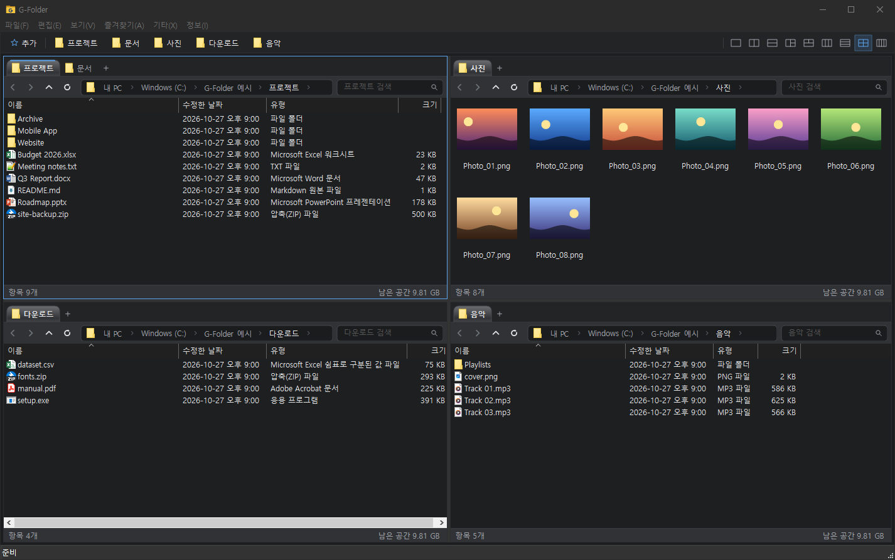
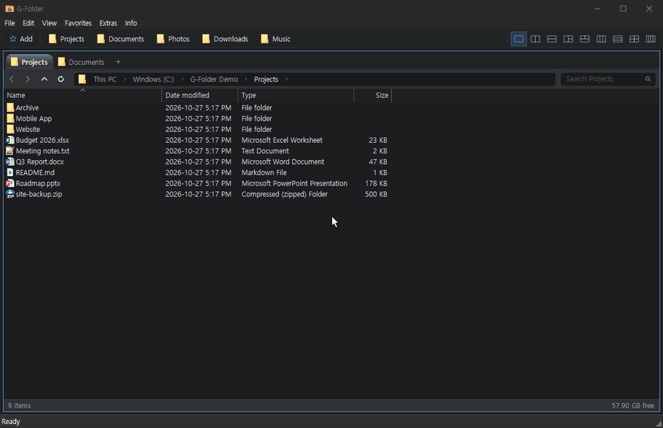
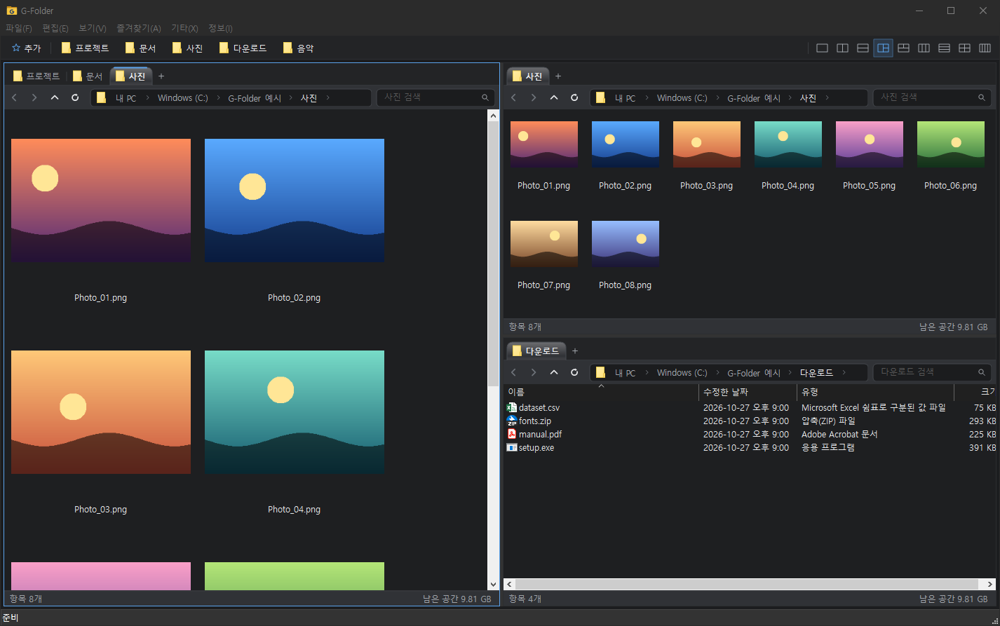

폴더 여러 개를
한 화면에서.
화면을 1~4개로 나누고 창마다 탭을 여세요. 탐색기 창을 여러 개 띄워 놓고 오가지 않아도 폴더 사이에서 파일을 빠르게 옮기고 정리할 수 있습니다.

탐색기처럼 익숙하게, 더 빠르게
윈도우 파일 탐색기와 같은 우클릭 메뉴와 복사·붙여넣기를 그대로 써서 따로 익힐 것이 거의 없습니다.
9가지 창 배치
1·2·3·4분할 중 골라 쓰고, 한 번에 창 크기를 똑같이 맞춥니다.
창마다 여러 탭
탭을 끌어 다른 창으로 옮기고, Ctrl을 누르고 놓으면 복사됩니다.
탐색기와 같은 우클릭 메뉴
압축 프로그램, 연결 프로그램 등 탐색기 메뉴가 그대로. 실행 취소(Ctrl+Z)도 됩니다.
사진 미리보기
아주 큰 아이콘부터 자세히 보기까지, Ctrl+휠로 크기를 바로 조절합니다.
폴더마다 정렬 기억
이름·날짜·유형·크기 정렬과 분류 방식을 폴더마다 기억합니다.
색상 필터
확장자나 이름에 따라 글자 색을 바꿔 원하는 파일을 한눈에 찾습니다.
여러 파일 이름 바꾸기
F2로 한꺼번에 이름을 바꾸고, 폴더 크기 계산·목록 CSV 내보내기도 됩니다.
USB 꽂으면 바로
USB·외장 하드를 꽂으면 고른 창에 탭이 열리고, 빼면 닫힙니다.
어두운·밝은 테마
블랙·화이트 테마와 한국어·English를 지원합니다.
탭을 끌어서 옮기세요
창 배치를 바꾸고, 탭을 다른 창으로 끌어다 놓기만 하면 됩니다.

사진 폴더도 시원하게
아주 큰 아이콘 보기로 사진을 미리 보고, 사진을 열면 Windows 사진 앱에서 다음·이전 사진으로 넘겨 볼 수 있습니다.

다운로드
두 가지 중 편한 것을 고르세요. 기능은 같습니다.
설치판
GitHub에서 바로 받는 설치 파일입니다. 새 버전이 나오면 프로그램이 알려 줍니다.
- 파일 탐색기 우클릭에 'G-Folder로 열기' 추가 가능
- 설치할 때 언어(한국어/English) 선택
Windows 10 / 11 (64비트) · 무료
자주 묻는 질문
정말 무료인가요?
네, 무료입니다. 광고도 없습니다. 도움이 되셨다면 Ko-fi로 후원해 주시면 큰 힘이 됩니다.
설치할 때 'Windows의 PC 보호' 창이 떠요.
개인 개발자가 만든 프로그램이라 아직 코드 서명이 없어서 처음에 경고가 뜰 수 있습니다. 추가 정보 → 실행을 누르세요. 경고 없이 설치하려면 Microsoft Store 판을 받으세요.
Q-Dir과 무엇이 다른가요?
화면을 나눠 폴더 여러 개를 보는 방식은 같고, 탭 끌어 옮기기·폴더마다 정렬 기억·사진 미리보기·USB 자동 탭 등 편의 기능을 더했습니다. 한국어를 기본으로 지원합니다.
어떤 정보를 보내나요?
업데이트 안내를 위해 무작위 설치 ID와 프로그램·윈도우 버전만 보냅니다. PC 이름, 윈도우 계정, 파일·폴더 이름은 보내지 않습니다. 개인정보 처리 안내
업데이트는 어떻게 하나요?
새 버전이 나오면 G-Folder를 켤 때 알려 줍니다. 받은 설치 파일을 실행하면 설정은 그대로 두고 업데이트됩니다. 스토어판은 스토어가 업데이트합니다.
버그나 건의는 어디에 남기나요?
G-Folder의 기타 → 피드백 보내기에서 바로 보내거나 GitHub Issues에 남겨 주세요.